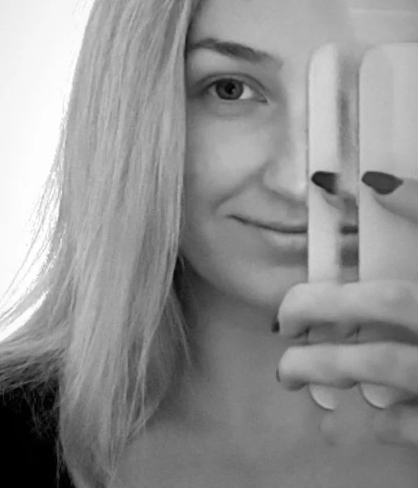

10+
lat w web developmencie
WordPress, frontend i backend
Frontend / WordPress Developer · Warszawa
Cześć, jestem Iryna
Od ponad 10 lat tworzę serwisy dla uczelni, e-commerce i firm usługowych: własne motywy, bloki Gutenberg, WooCommerce, automatyzacje i dostępność WCAG. Łączę kod z analizą potrzeb biznesowych i logiką produktu.Własne motywy, sklepy WooCommerce i integracje dla uczelni, e-commerce i firm usługowych — od ponad 10 lat.

Warszawa · od 2020
UA · PL · EN
10+
lat w web developmencie
WordPress, frontend i backend
7+
projektów dla uczelni
WooCommerce, płatności, InPost, BIP
WCAG 2.1
certyfikat dostępności
Zdobyty w 2022 roku
2
własne projekty
Rozwijane z narzędziami AI
Mam na imię Iryna. Pochodzę z Kalusza, a moja droga w IT zaczęła się w Iwano-Frankiwsku, gdzie spędziłam trzy dobre lata i poznałam wielu przyjaciół. Od 2020 roku mieszkam i pracuję w Warszawie.
Web developmentem zajmuję się od ponad 10 lat. Pracuję z WordPressem — po stronie frontendu i backendu: tworzę strony, aplikacje webowe i różnego rodzaju integracje. Realizowałam projekty w wielu branżach — od edukacji i e-commerce po inne produkty cyfrowe.
Lubię się uczyć i odkrywać nowe rzeczy. Ukończyłam kurs Data Analytics, a obecnie poznaję Project Management i UI/UX Design. Szczególnie interesuje mnie sztuczna inteligencja w programowaniu — na co dzień eksperymentuję z narzędziami AI, m.in. Cursorem, a po godzinach rozwijam dwa własne projekty.
Moje doświadczenie łączy programowanie z pracą nad produktem: od wymagań biznesowych, przez logikę funkcji, po testy i utrzymanie gotowego serwisu.
WordPress Multisite, wielojęzyczność, e-commerce, edukacja
WooCommerce, systemy płatności, InPost, API i automatyzacja
Cursor i narzędzia AI — szybszy rozwój i eksperymenty
Analiza biznesowa, logika produktów, Trello i automatyzacja procesów
Gutenberg, ACF, CPT, PHP, JavaScript, SCSS, własne motywy
Akcje, oferty, kalkulatory, UX i strategie marketingowe
Praca z zespołem, Trello, analiza wymagań, planowanie
Testy, WCAG, SEO, Git, Plesk, audyty techniczne
Pracuję z firmami, uczelniami i sklepami internetowymi — przy nowych stronach i przy rozwoju serwisów, które już działają.
Motyw zbudowany pod Twoje treści: bloki Gutenberg, pola ACF i własne typy wpisów, dzięki którym zespół edytuje stronę w panelu, bez zmian w kodzie.
Kiedy warto
Gdy gotowy szablon ogranicza, a strona ma się rozwijać.
Katalog, koszyk, płatności online i InPost, a także dopasowanie procesu zamówień do sposobu pracy Twojego zespołu.
Kiedy warto
Gdy zaczynasz sprzedaż online albo rozbudowujesz istniejący sklep.
Połączenie WordPressa z API i usługami zewnętrznymi oraz automatyzacje w Google Apps Script, Trello czy Power Automate.
Kiedy warto
Gdy zespół ręcznie powtarza te same czynności.
Kalkulatory, formularze, filtry i interfejsy wielojęzyczne, a także mechaniki akcji i ofert przygotowywane z marketingiem.
Kiedy warto
Gdy strona ma pomagać klientom w wyborze, a nie tylko informować.
Audyt techniczny, wdrożenie standardów WCAG 2.1, SEO techniczne, optymalizacja i bieżące utrzymanie.
Kiedy warto
Gdy strona ma błędy, działa wolno lub musi spełniać wymogi dostępności.
WordPress Multisite, wiele wersji językowych, BIP, strony wydarzeń i konferencji — uporządkowana struktura wielu serwisów.
Kiedy warto
Gdy prowadzisz kilka stron albo organizację z wieloma działami.
Od 2017 roku pracuję przy stronach i serwisach WordPress — dla firm, uczelni i klientów z kilku krajów.
Frontend / WordPress Developer
Hybrydowo · pełny etat · Warszawa
Rozwój i utrzymanie serwisów dla firm z branży edukacji, e-commerce, usług i rozwiązań korporacyjnych.
Frontend Developer
Warszawa
Ponad trzy lata rozwoju serwisów Akademii Ekonomiczno-Humanistycznej w Warszawie, dziś Uniwersytetu VIZJA.
Frontend / WordPress Developer
Klienci międzynarodowi
Realizacje WordPress dla klientów m.in. z Francji i Holandii.
CMS i e-commerce
Frontend
Backend i integracje
Jakość
Warsztat
Realizacje, które kodowałam samodzielnie lub wspólnie z zespołem. Przy projektach zespołowych znajdziesz odpowiednie oznaczenie.
akademiata.pl
— Otwiera się w nowej karcieuni-munich.de
— Otwiera się w nowej karcieunixedu.com
— Otwiera się w nowej karcieonline.ilcentres.com
Projekt nie wystartował — Otwiera się w nowej karcietevizja.pl
— Otwiera się w nowej karciebip.vizja.pl
— Otwiera się w nowej karcielearnmore.vizja.pl
— Otwiera się w nowej karcieporadnia.tevizja.pl
Projekt zespołowy — Otwiera się w nowej karcievizjafood.pl
— Otwiera się w nowej karcievizja.pl
Projekt zespołowy — Otwiera się w nowej karcievizjapark.pl
— Otwiera się w nowej karciesummercamp.vizja.pl
— Otwiera się w nowej karciecertyfikatpolski.vizja.pl
— Otwiera się w nowej karcieorthodontiste-marseille-sastre.fr
— Otwiera się w nowej karcieselarl-kaempf-muller-kaempf.chirurgiens-dentistes.fr
— Otwiera się w nowej karcieorthodontiste-nussbaumer-strasbourg.fr
— Otwiera się w nowej karcieneurotech-nl.com
— Otwiera się w nowej karcieorthodontie-biegel.fr
— Otwiera się w nowej karciedentistes-lille-carredessourires.fr
— Otwiera się w nowej karcieorthodontistes-toulouse-saladin-hamel.fr
— Otwiera się w nowej karciedr-eric-gathrat.chirurgiens-dentistes.fr
— Otwiera się w nowej karciedr-houver-christophe.chirurgiens-dentistes.fr
— Otwiera się w nowej karciehuumsauna.com
— Otwiera się w nowej karcieorthodontie-egloff.fr
— Otwiera się w nowej karcieandreas-capital.com
— Otwiera się w nowej karciedentiste-lyon-villeurbanne-roussel.fr
— Otwiera się w nowej karcieselarl-kanter-daniel.chirurgiens-dentistes.fr
— Otwiera się w nowej karciescp-mazas-daude.chirurgiens-dentistes.fr
— Otwiera się w nowej karciedental7paris.com
— Otwiera się w nowej karciedentistes-dedieu-coll.fr
— Otwiera się w nowej karcieselarl-dr-eric-ursat.chirurgiens-dentistes.fr
— Otwiera się w nowej karcieselarl-kdentaire.chirurgiens-dentistes.fr
— Otwiera się w nowej karciedr-kaufmann-olivier.chirurgiens-dentistes.fr
— Otwiera się w nowej karcieopenstudycollege.com
Projekt zespołowy — Otwiera się w nowej karciePlanujesz nową stronę, sklep albo integrację? A może potrzebujesz wsparcia przy istniejącym WordPressie? Napisz, czego potrzebujesz — odpowiem.